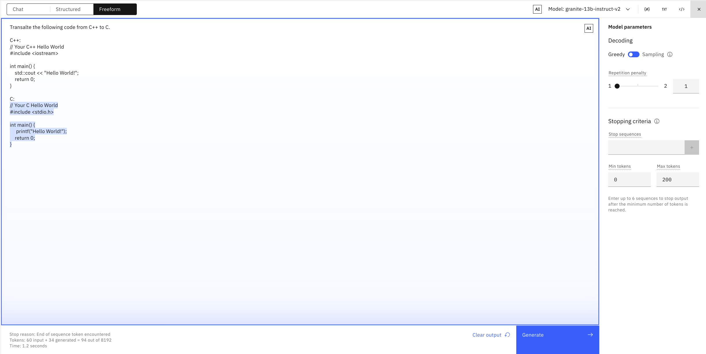

Prompt engineering exercise answers
| Exercise | Description |
|---|---|
| 0. Zero-shot generation | Generate a marketing message with 5 sentences |
| 1. Generate sentences | Write three sentences about birds |
| 2. Working with JSON | Generate a JSON file |
| 3. Summarize | Summarize a short story |
| 4. Work with code | Translate from C++ to C |
0. Zero-shot generation
Goal
Generate a marketing message with 5 sentences
A possible solution
Info
Los distintos modelos pueden requerir instrucciones diferentes. En el caso de los modelos más grandes y "creativos", puede ser necesario que las instrucciones sean más explícitas.
Es tentador pensar que los modelos más grandes son "más inteligentes". Hay algo de verdad en ello, pero estos modelos también pueden ser demasiado creativos. Como ha visto, puede que tenga que ser muy explícito para obtener el resultado que busca. Tenga en cuenta que la creatividad no es necesariamente un problema. Este es uno de los atractivos de la IA generativa y de los modelos fundacionales. Pero si no está intentando generar contenidos creativos (como en este ejemplo: quiere que su correo electrónico mencione los puntos específicos y no añada contenidos ficticios), quizá deba considerar un modelo más pequeño (y menos creativo) o proporcionar indicaciones más estrictas para controlar los modelos.
Tip
También puedes ver el efecto de cambiar algunos parámetros de configuración:
- Temperatura: Cuanto mayor sea el valor, más creativo será el modelo.
- Top P: Un valor más bajo significa menos variabilidad
- Top K: Un valor más bajo significa menos variabilidad
Click here to go back to this exercise
1. Generate
Goal
Write three sentences about birds
A possible solution
Info
Los modelos manejan los requisitos de salida de forma diferente. Algunos modelos (como los modelos de flan) son mejores con la salida de texto (al menos con la indicación zero-shot). Puede guiar la salida si actualiza el aviso con la sugerencia de una "lista". Otros modelos, como el mpt- 7b-instruct2, y en menor grado el modelo gpt-geox-20b, son más capaces de entender el concepto de salida de lista sin instrucciones adicionales.
Click here to go back to this exercise
2. Working with JSON
Goal
Generate a JSON file
A possible solution
Info
Mientras que los modelos flan han demostrado una buena capacidad para generar texto en lenguaje natural, no parecen entender cómo generar una salida en formato JSON, al menos no con zero-shot. Los modelos mpt-7b-instruct2 y starcoder-15.5bmodel pueden generar una buena salida JSON. Diferentes modelos son entrenados/ajustados para diferentes tareas y habilidades. Deberías buscar modelos que estén entrenados con datos específicos del dominio con un enfoque en varias estructuras de datos y capacidades. Experimente también el uso de las Stop sequences para evitar que un modelo genere texto no deseado.
Click here to go back to this exercise
3. Summarize
Goal
Summarize one of the following short stories
A possible solution
Click here to go back to this exercise
4. Code
Goal
Translate from C++ to C
A possible solution

Info
Las tareas de codificación requieren modelos básicos que comprendan la compleja estructura de salida del código. Los modelos de lenguaje natural como la familia de modelos flan, no funcionan bien para los casos de uso de generación y traducción de código. El mejor modelo para estas tareas dentro de la biblioteca de IBM es el modelo starcoder-15.5b. Funciona bien en ambos tipos de tareas (generación de código y traducción de código). Sin embargo, para la generación de código, es necesario realizar one-shot para guiar al modelo hacia la salida deseada.